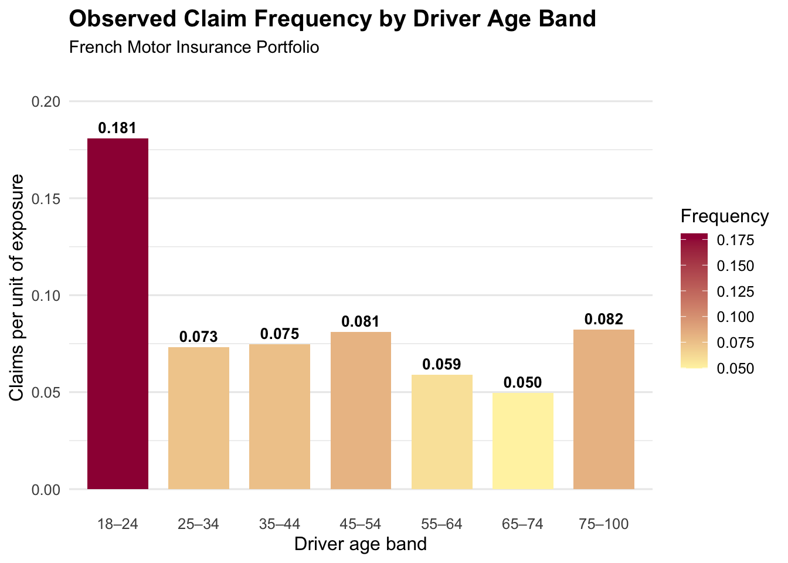
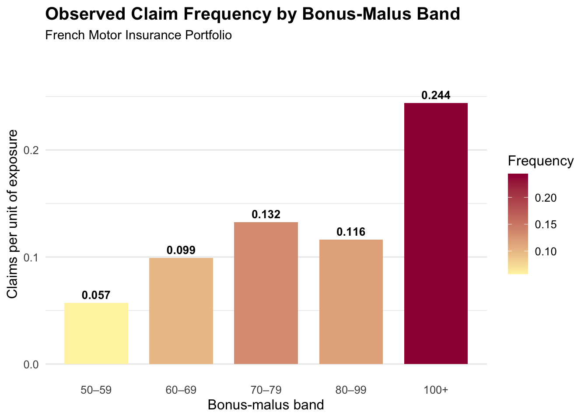

Exploring Auto Claim Frequency Across Driver and Policy Segments (R)
Author
Sam Xu
Published
September 28, 2026
Question
TipAnalytical objective
How does automobile claim frequency vary across key driver and policy characteristics in a French motor insurance portfolio?
At a glance
Portfolio: French Motor Third-Party Liability insurance portfolio
Geography: France
Sample size: 30,000 policies
Goal: Explore how claim frequency varies across key driver and policy segments
Method: Exposure-weighted grouped summaries by driver age and bonus-malus bands
Data
This analysis uses the same 30,000-policy simple random sample drawn without replacement in R using set.seed(521) from the freMTPL2freq French Motor Third-Party Liability dataset, which represents automobile insurance policies from France.
To examine another common insurance rating variable, BonusMalus is grouped into bands and summarized using the same exposure-weighted claim frequency measure.
The descriptive patterns can be compared visually using the same exposure-weighted claim frequency measure.

Figure 1: Observed claim frequency by driver age band in a French motor insurance portfolio.

Figure 2: Observed claim frequency by bonus-malus band in a French motor insurance portfolio.
TipKey takeaway
Observed claim frequency varies substantially across both driver age and bonus-malus bands.
For driver age, the 18–24 group has the highest observed frequency at approximately 0.181 claims per unit of exposure. Frequency drops sharply for drivers aged 25–34 and remains lower across most older age groups, reaching its lowest level for drivers aged 65–74 before increasing again for the 75–100 group.
The bonus-malus pattern is more pronounced. Observed frequency rises from approximately 0.057 for the 50–59 band to 0.244 for policies with a bonus-malus value of 100 or higher. This suggests a strong descriptive relationship between higher bonus-malus values and higher claim frequency in the sampled portfolio.
These patterns are descriptive portfolio-level associations and should not be interpreted as causal effects.
Results
ImportantWhat stands out
The 18–24 age band has the highest observed claim frequency among the driver-age groups.
The lowest observed driver-age frequency appears in the 65–74 band.
The strongest segmentation appears across BonusMalus, with the 100+ band showing substantially higher observed frequency.
Taken together, the grouped summaries show meaningful segmentation in observed claim frequency across both dimensions.
The bonus-malus pattern is particularly pronounced, with substantially greater separation between bands than in the driver-age comparison. This is consistent with the role of bonus-malus as a rating variable reflecting prior claims experience or risk differentiation.
Overall, the R analysis suggests that both driver age and bonus-malus are useful for segmenting observed claim frequency within this French motor portfolio.
Conclusion
The exploratory analysis shows clear differences in observed claim frequency across both driver age and bonus-malus segments in this sampled French motor portfolio.
Younger drivers, particularly those aged 18–24, have higher observed claim frequency than most older age groups. The strongest segmentation appears across bonus-malus bands, where higher values are associated with substantially higher observed claim frequency.
These findings support the use of driver and policy characteristics for descriptive risk segmentation, while remaining portfolio-level associations rather than causal relationships.
NoteBottom line
Driver age and bonus-malus both provide useful descriptive segmentation of claim frequency in this sample, with bonus-malus showing the stronger overall pattern.